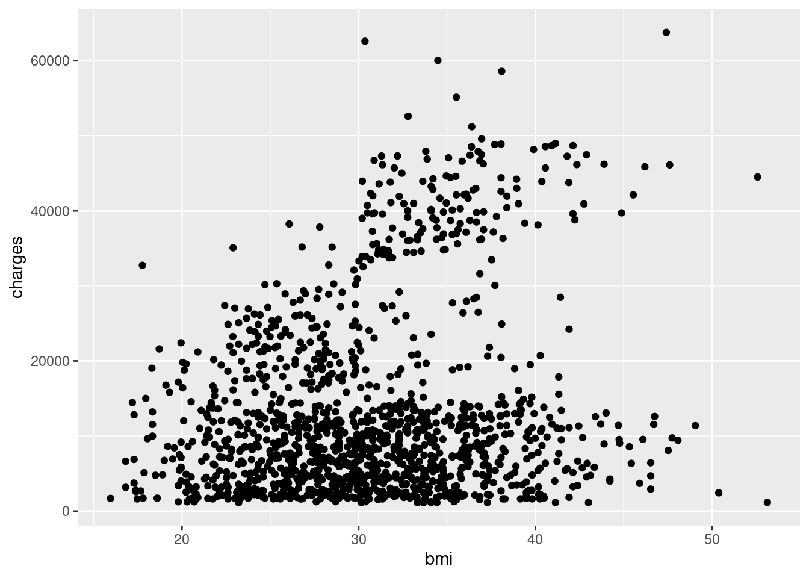

install.packages("ggplot2")8 Visualizing your data
How to use ggplot2
Abstract
This chapter introduces students to the ggplot2 package, a powerful tool for creating sophisticated and publication-ready data visualizations in R. Students learn the foundational “grammar of graphics” approach, which builds plots layer by layer using seven core components: data, mapping, geometries, facets, statistics, coordinates, and themes. Through hands-on examples using insurance data, the chapter demonstrates how to construct various plot types including scatterplots, bar plots, and violin plots. Students explore how to visualize relationships between variables, incorporate grouping variables using color and faceting, and customize plots with titles, labels, and themes. By the end of this chapter, students will understand how to select appropriate visualizations based on data types and create professional-quality figures for their public health research.
Keywords
ggplot2, data visualization, grammar of graphics, R, exploratory data analysis
Tipüìñ Learning Resources
- R for Data Science (2e): Data Visualization & Visualize
- ggplot2 Book: elegant graphics
- Datacamp Course: ggplot2
- Cheat Sheet: ggplot2
- Posit Code: ggplot2 & tidyverse
8.1 The ggplot2 Package
Recall: Packages are collections of code, data, and documentation that add extra functionality not included in base R.
To install and load ggplot2:
8.2 Example Dataset: Insurance Charges
Let’s start by loading our dataset and exploring it:
insurance <- read.csv("data/insurance.csv")library(ggplot2)8.2.1 Summarizing Our Data
Let’s learn more about our data with summary():
summary(insurance) age sex bmi children
Min. :18.00 Length:1338 Min. :15.96 Min. :0.000
1st Qu.:27.00 Class :character 1st Qu.:26.30 1st Qu.:0.000
Median :39.00 Mode :character Median :30.40 Median :1.000
Mean :39.21 Mean :30.66 Mean :1.095
3rd Qu.:51.00 3rd Qu.:34.69 3rd Qu.:2.000
Max. :64.00 Max. :53.13 Max. :5.000
smoker region charges
Length:1338 Length:1338 Min. : 1122
Class :character Class :character 1st Qu.: 4740
Mode :character Mode :character Median : 9382
Mean :13270
3rd Qu.:16640
Max. :63770 head(insurance, 10) age sex bmi children smoker region charges
1 19 female 27.900 0 yes southwest 16884.924
2 18 male 33.770 1 no southeast 1725.552
3 28 male 33.000 3 no southeast 4449.462
4 33 male 22.705 0 no northwest 21984.471
5 32 male 28.880 0 no northwest 3866.855
6 31 female 25.740 0 no southeast 3756.622
7 46 female 33.440 1 no southeast 8240.590
8 37 female 27.740 3 no northwest 7281.506
9 37 male 29.830 2 no northeast 6406.411
10 60 female 25.840 0 no northwest 28923.1378.3 The Seven Components of ggplot2
Think of building a ggplot like making a layered lasagna - you add one component at a time to create the final product. The seven components are:
Data: The dataset you’re visualizing
Mapping: Which variables go on which axes (aesthetics)
Geometries: The type of plot (points, lines, bars, etc.)
Facets: Subplots based on categorical variables
Statistics: Statistical transformations of the data
Coordinates: The coordinate system (usually Cartesian)
Theme: Visual styling and appearance

8.4 Understanding Data Types
Before creating visualizations, it’s important to understand your data types:
Qualitative Data:
üè∑Ô∏è Nominal Data: Categories without any order (e.g., Red, Green, Blue)
üì∂ Ordinal Data: Categories with some order (e.g., Small, Medium, Large)
Quantitative Data:
üî¢ Discrete: Countable data (e.g., number of people in a room)
üìè Continuous: Measurable data (e.g., height, weight)
8.5 Building a Plot Step by Step
8.5.1 Step 1: Data and Mapping
What is the relationship between BMI and insurance charges?
ggplot(data = insurance, mapping = aes(x = bmi, y = charges))
This creates a blank canvas with our axes defined, but no data displayed yet!
8.5.2 Step 2: Adding Layers with Geometries
Add points to create a scatterplot using geom_point():
ggplot(data = insurance, mapping = aes(x = bmi, y = charges)) +
geom_point()
8.5.3 Step 3: Adding a Trend Line
Add a linear model line with geom_smooth():
ggplot(data = insurance, mapping = aes(x = bmi, y = charges)) +
geom_point() +
geom_smooth(method = "lm")
Notice how it looks like we have two different populations? Let’s explore this further.
8.6 Incorporating Grouping Variables
There are two main approaches to visualizing grouping variables:
8.6.1 Method 1: Using Color
Map the smoker variable to color:
ggplot(data = insurance,
mapping = aes(x = bmi, y = charges, color = smoker)) +
geom_point() +
geom_smooth(method = "lm")
8.6.2 Method 2: Using Facets
Create separate panels for each group with facet_wrap():
ggplot(data = insurance, mapping = aes(x = bmi, y = charges)) +
geom_point() +
geom_smooth(method = "lm") +
facet_wrap(~smoker)Both methods reveal that smoking status significantly affects the relationship between BMI and insurance charges!
8.7 Customizing with Themes
8.7.1 Adding Titles and Labels
Make your plot more informative with descriptive titles:
ggplot(data = insurance, mapping = aes(x = bmi, y = charges, color = smoker)) +
geom_point() +
geom_smooth(method = "lm") +
ggtitle("Insurance charges vs BMI for smokers and non-smokers") +
xlab("Body Mass Index (BMI)") +
ylab("Insurance Charges")
8.7.2 Changing the Theme
Apply a professional theme with theme_bw():
ggplot(data = insurance, mapping = aes(x = bmi, y = charges, color = smoker)) +
geom_point() +
geom_smooth(method = "lm") +
ggtitle("Insurance charges vs BMI for smokers and non-smokers") +
xlab("Body Mass Index (BMI)") +
ylab("Insurance Charges") +
theme_bw()
8.8 Other Common Plot Types
8.8.1 Bar Plots with geom_bar()
Bar plots are useful for comparing means across categories:
ggplot(data = insurance, mapping = aes(x = region, y = charges)) +
geom_bar(stat = 'summary', fun = 'mean', fill = "#005a43") +
ggtitle("Mean Insurance Charges Based on Region") +
xlab("Region") +
ylab("Insurance Charges") +
theme_bw()8.8.2 Violin Plots with geom_violin()
Violin plots show the distribution of data across categories:
ggplot(data = insurance, mapping = aes(x = smoker, y = charges, fill = smoker)) +
geom_violin() +
ggtitle("Distribution of Insurance Charges by Smoking Status") +
xlab("Smoker (Y/N)") +
ylab("Insurance Charges") +
theme_bw()